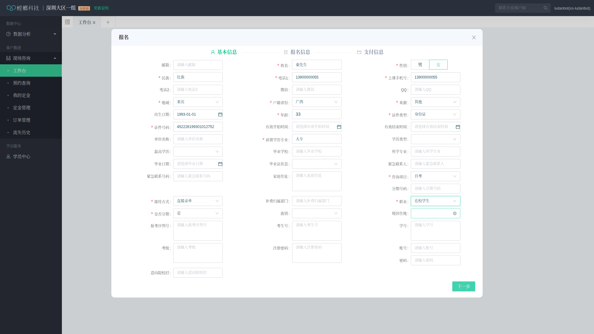
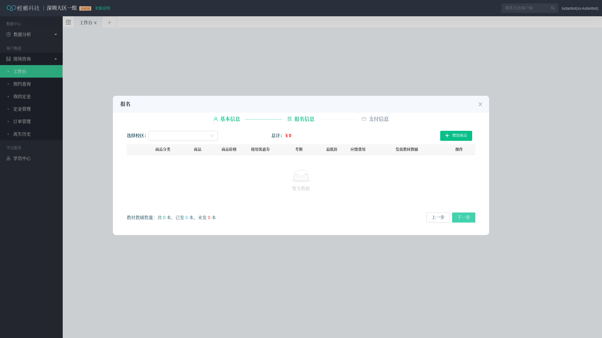
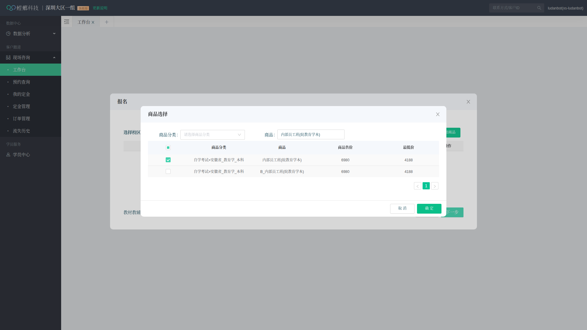

从失败到成功的完整开发过程 | 西门吹雪&掠夺者引擎强力制作
开发一个自动化脚本，实现螳螂营销云系统的学员批量录单功能：
创建基础脚本，实现登录功能
14个字段全部填写成功，无重复输入
第二步商品添加成功，完整流程打通
备份成功版本，记录完整过程
page.type() 直接追加文本，没有清空原有内容
// 先清空输入框
await page.fill('#field', '');
await humanDelay(200, 400);
// 再输入新内容
await page.type('#field', value, { delay: 100 });
// 测试号码序列 13900000099 ✅ 13900000088 ✅ 13900000077 ✅ 13900000066 ✅ 13900000055 ✅ 13900000033 ✅
// 尝试多种选择器
const selectors = [
'button:has-text("+ 增加商品")',
'button:has-text("增加商品")', // ✅ 这个成功了
'button:has-text("+ ")'
];
// 找到第一列的复选框
const checkbox = await row.$('td:first-child input[type="checkbox"]');
if (checkbox) {
await checkbox.click();
console.log('✅ 已勾选第一列的复选框');
}
.ant-modal-footer）
// 在弹窗底部查找主按钮 const selector = '.ant-modal-footer .ant-btn-primary'; await page.click(selector); // ✅ 成功！
// 必须是全新号码，否则电话1不会自动填入
const phone1Value = await page.$eval('#phone1', el => el.value);
if (phone1Value.length !== 11) {
throw new Error('电话1 必须是 11 位');
}
// 根据价格判断商品行
for (let i = 0; i < allRows.length; i++) {
const text = await allRows[i].innerText();
// 检查是否包含价格（3位以上数字）
if (/\d{3,}/.test(text)) {
console.log(`第 ${i + 1} 行包含价格，这是商品行`);
// 点击第一列的复选框
const checkbox = await allRows[i].$('td:first-child input[type="checkbox"]');
await checkbox.click();
break;
}
}
// 随机延迟，模拟人类操作
const humanDelay = (min = 500, max = 1500) => {
return new Promise(resolve =>
setTimeout(resolve, Math.random() * (max - min) + min)
);
};
// 慢速输入
await page.type('#field', value, { delay: 100 });
第一步填写完成：

第二步页面：

商品勾选成功：

scripts/batch-ludan-complete-success.js - 完整成功版本（22KB）scripts/batch-ludan-step1-success.js - 第一步成功版本ludan/minzu.json - 56个民族数据ludan/diqu.json - 34个省份数据ludan/matcher.js - 模糊匹配函数